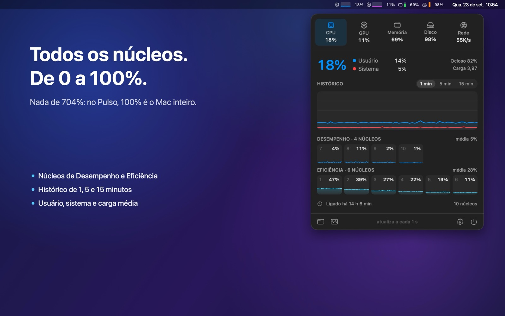
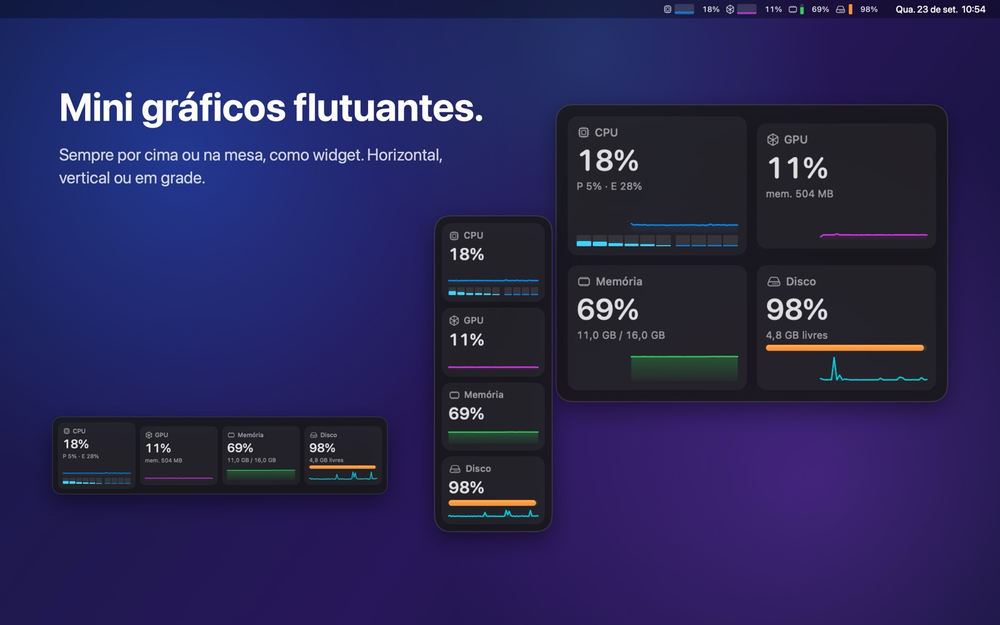

Pulse
Pulse
Seu Mac, de relance.
CPU, GPU, memória e disco na barra de menus, com mini gráficos e porcentagens fáceis de ler. No Pulse, 100% é o Mac inteiro: nada de 704%.

O que ele faz
- CPU, GPU, memória e disco sempre à vista na barra de menus.
- Todos os núcleos, separados em Desempenho e Eficiência.
- Painel com histórico, pressão de memória, swap e espaço de cada disco.
- Janela flutuante com mini gráficos, por cima de tudo ou na mesa.
- Estilos, cores e alertas do seu jeito.
